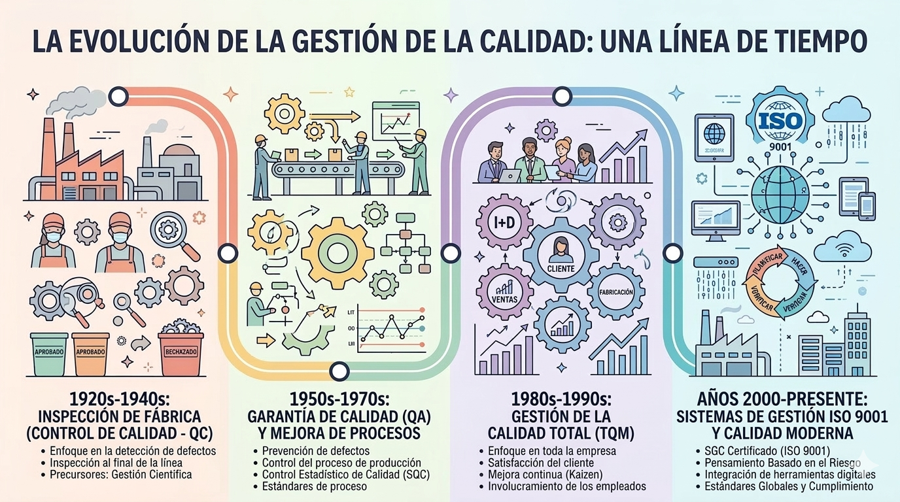
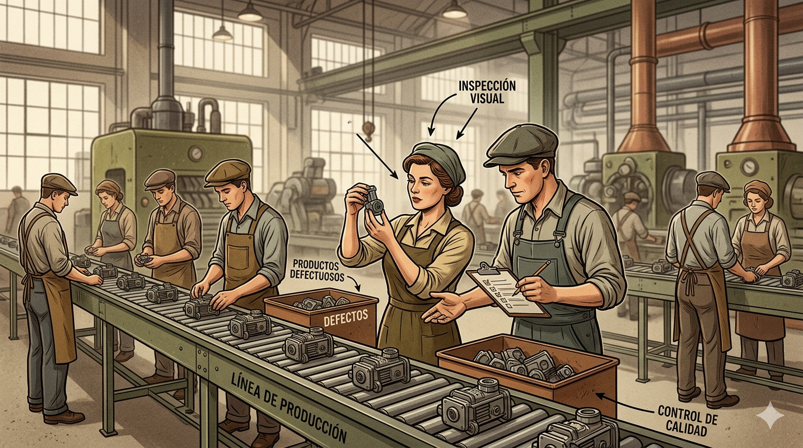
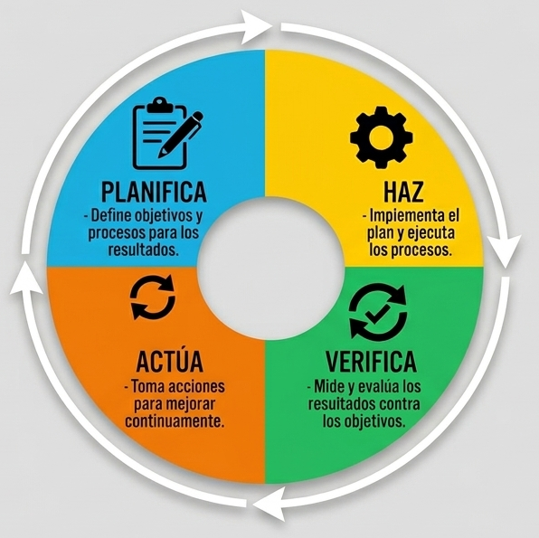
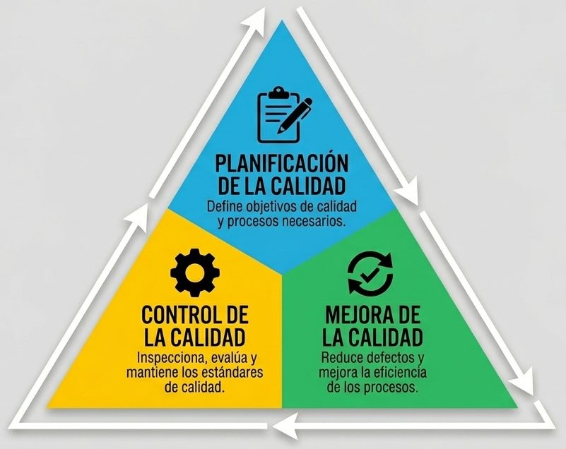
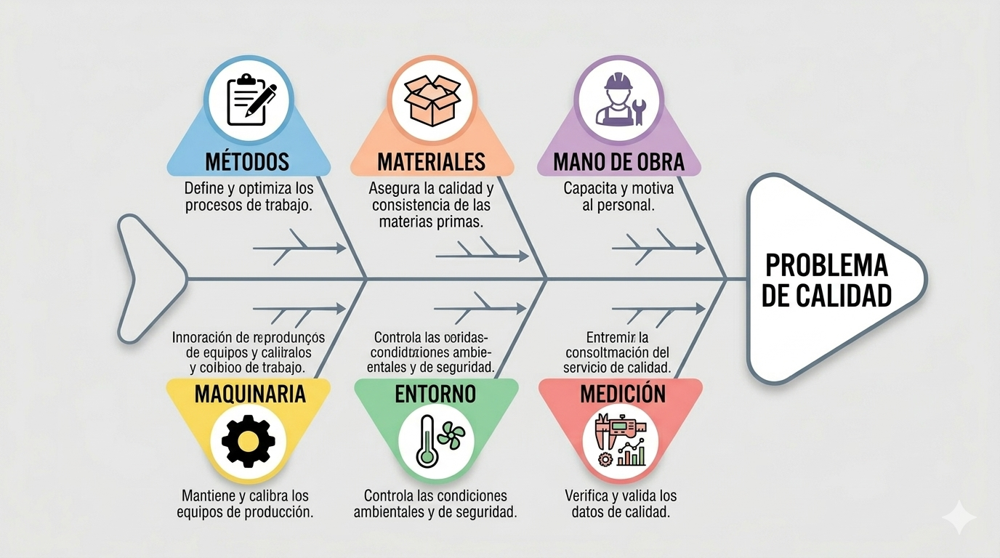
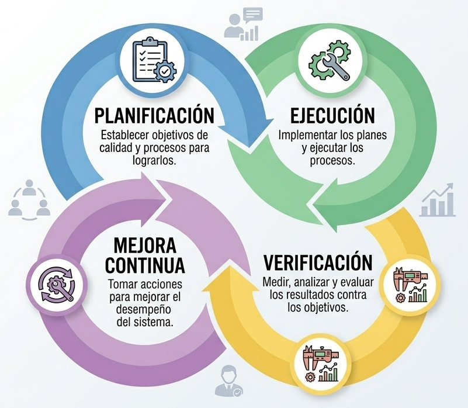

De la inspección al mejoramiento continuo

Se inspeccionaban los productos al final del proceso.

Calidad basada en procesos y mejora continua.

La calidad se gestiona mediante su trilogía:

Analiza las causas de los problemas y promueve la participación.

Las ideas de Deming, Juran e Ishikawa influyen hoy en los sistemas modernos de gestión de calidad como ISO 9001.